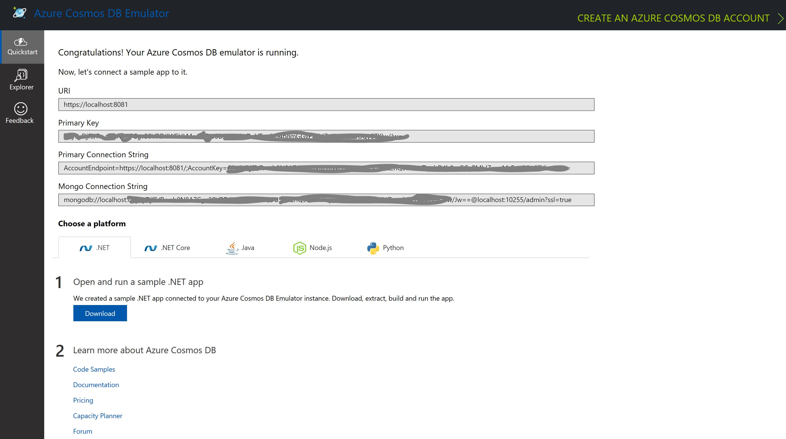
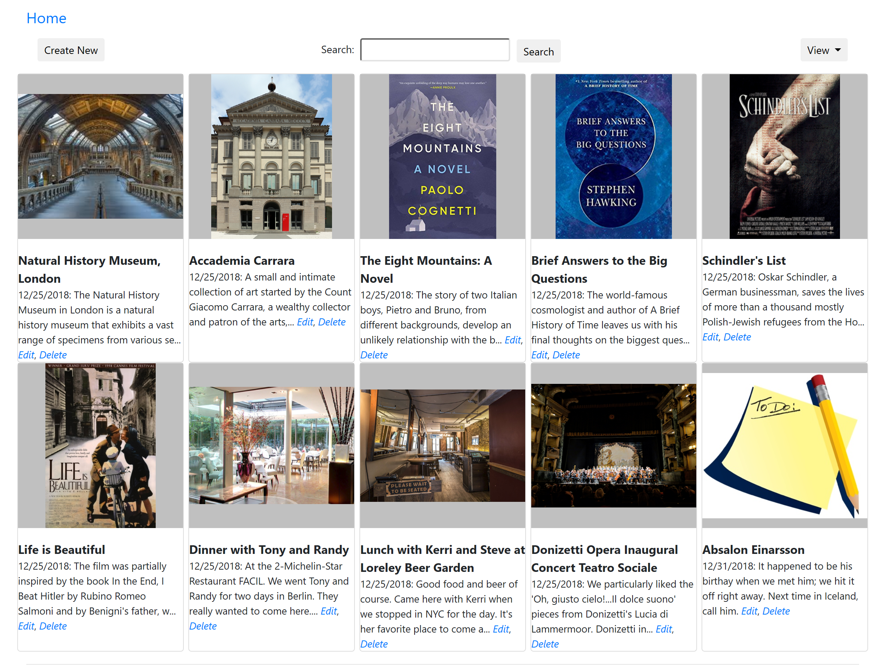

Get Started
To build the Scrapbook101core app on Windows use the following:
Install these components on your development or local server. This server will be your local run/test environment as well as the publish point to push changes live, if you choose to do so.
Visual Studio has different workloads that can be installed. If you are running Scrapbook101core on ASP.NET for Windows, then you need the ASP.NET and web development workload. If you are running Scrapbook101core on ASP.NET Core, then you need the .NET Cross-platform development workload. For more information on workloads, see Selecting Workloads in Visual Studio 2017.
After installing the Cosmos DB Emulator, confirm that you can run Cosmos DB Local Emulator. You should see a screen like the following image. Your primary key will be different than the one shown in the image.

Run local
Running Scrapbook101core locally, you can try out your ideas at no cost or risk. Here are the steps:
Clone (https://github.com/travelmarx/scrapbook101core.git) or download the Scrapbook101core code and open it as a solution in Visual Studio. The source code in the
Scrapbook101corefolder.Open the solution in Visual Studio. For example, open the solution file
Scrapbook101core.sln.Customize the code as follows in the
appsettings.jsonfile.Enter the correct value for AuthKey, which you can get from the local emulator home page as show above. It's the Primary Key.
Enter a Bing Maps Key for BingMapKey if you have one; if blank, then geocoding is skipped.
Set the value for AddTestAssets to
trueto write test assets orfalsenot to write them.The testCategories and testItems keys are set to use test dataset 1. Any other dataset available in the \Assets folder can be used, however both keys should use the same dataset.
There are other appsettings.json settings you can change, but the three above are the enough to get started. For information on running locally for the ASP.NET MVC version of this project (called Scrapbook101), see https://travelmarx.github.io/scrapbook101/get-started#run-local.
With the Cosmos DB Local Emulator running, run the solution (Visual Studio F5) and view Scrapbook101core in a browser, e.g. https://localhost:port#/. You should see something ressembling the following screenshot:

Here's what happened on startup:
In the document store, a database named Scrapbook101 was created with a collection named Items.
A category document was created and stored in the document store. The category information was read from the file
Assets/category-documents-testset1.json.If the configuration option AddTestAssets to create test assets was set to
trueinappsettings.json, then test items were added to the document store as well. They were read from the fileAssets/item-documents-testset1.json.
The initial presentation of items is based on the DateAdded field, with most recent displayed first. This is an arbitrary choice and can be changed in the ItemController class IndexAsync method.
For information on what happened on startup for the ASP.NET MVC version of this project (called Scrapbook101), see https://travelmarx.github.io/scrapbook101/get-started#run-local.
Create an item
At this point, you can start working with Scrapbook101core items with CRUD (create, read, update, delete) operations. The home page is https://localhost:port#/ or https://localhost:port#/Item/Index.
To create a new Scrapbook101core item.
- On the home page, select Create.
- Choose a category in the Category dropdown.
- Fill in the Title field.
- Select Save or continue to fill in fields.
Run live
After running Scrapbook101core locally, you can take an optional next step and run Scrapbook101core as a web service. To do this you need to go live, which means publishing your site live with the following services:
- Azure Cosmos DB Service - This works the same as local emulator and you can copy any documents created locally to the live service.
- Azure Application Service - You can publish your site directly from Visual Studio to the Azure Application service.
Using Azure Cosmos DB Service, you will eventually incur charges, but be sure to take advantage of any limited, free tier offers.
There are a couple of other considerations when going live. In the least, you should consider:
- Authentication and authorization.
- Transfering any documents from local emulator to live service.
- Dealing with asset storage.
These and other topics are discussed in Next Steps and Handling Assets.